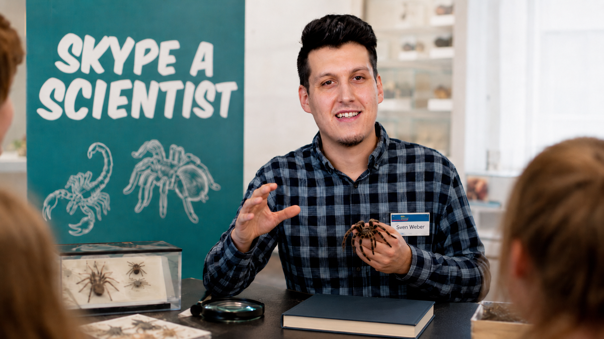
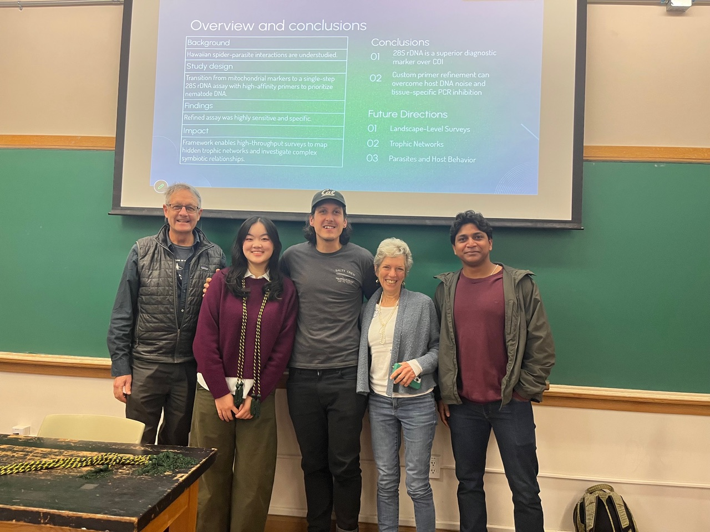
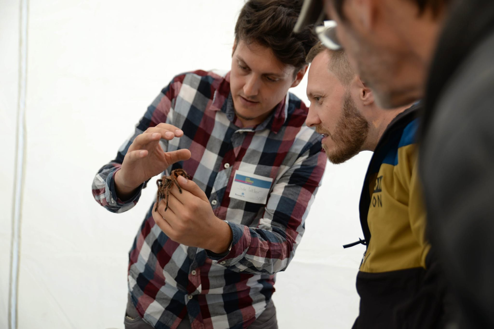
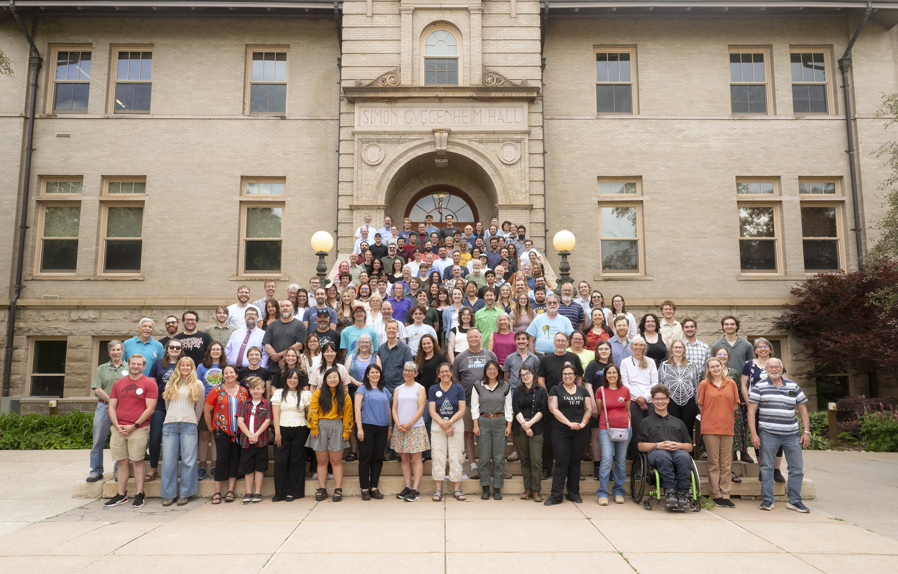

Science communication
I regularly present research on terrestrial eDNA, retrospective biomonitoring, spider ecology, insects, biodiversity, and conservation to scientific and public audiences.
Outreach

I regularly present research on terrestrial eDNA, retrospective biomonitoring, spider ecology, insects, biodiversity, and conservation to scientific and public audiences.

I have taught programming, metabarcoding analyses in R, biomonitoring, scientific presentation, zoology, molecular biology, and animal diversity.

I enjoy bringing insects, spiders, biodiversity, and ecology into schools, kindergartens, universities, elderly homes, and inclusion-oriented outreach settings.

Recent and selected topics include Hawaiian leaf litter eDNA, ambrosia beetles and Rapid Ohia Death, canopy arthropod monitoring, and spiders as natural DNA samplers.
April 2026
Ecolunch talk, UC Berkeley.
May 2026
Talk at the Lycosids of the World Workshop, Southwest University, Chongqing, China.
2024
Leaf litter eDNA biodiversity studies in Hawaiian montane wet forests, presented at iBOL in Belem, Brazil.